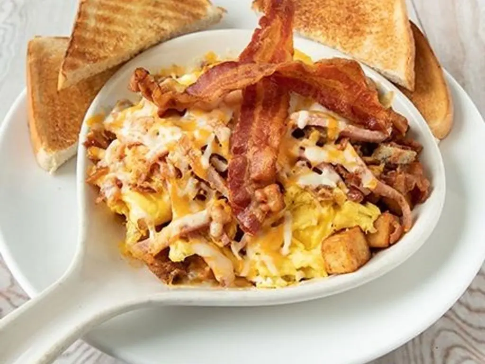

Home
Meatlover's Skillet

Description
A meat lovers skillet is a hearty breakfast
dish featuring a combination of various meats, potatoes, and sometimes vegetables, all cooked together in a skillet.
Ingredients
- Meats: Sausage (like Jimmy Dean's Sausage Skillets), bacon, and ham are typical inclusions.
- Potatoes: Hash browns or cubed potatoes provide a starchy base.
- Eggs: Often scrambled and incorporated into the skillet.
- Cheese: A cheese pouch or shredded cheese (like cheddar) is often included for melting.
- Optional additions: Vegetables like onions, peppers, and tomatoes may be added for extra flavor and nutrients.
- Flavor profile: The combination of savory meats, crispy potatoes, and melted cheese creates a rich and satisfying taste.
Instructions
- Cook the bacon, ham and sausage in a large skillet (preferably cast iron) over medium-hot heat on stove top. Cook approximately 15 minutes. Remove meat from skillet and excess grease in a small bowl.
- Place 1 Tablespoon of grease back into the skillet. Fry three eggs to the desired doneness (approximately 5 minutes). Remove eggs from skillet and place with meat on a plate.
- Slice potatoes into thin slices. Place two Tablespoons of reserved grease back into the skillet.
Place the potatoes in the skillet and fry over medium-hot heat.
Add more grease along the way if needed & season with salt & pepper, turning potatoes 1-2 times with tongs during frying process.
- After 10-15 minutes of frying potatoes they will become tender, place the previously cooked meat and eggs on top of the potatoes.
- Turn heat down to medium - low and let everything heat together for approximately 5 minutes. Season with additional salt & pepper if desired.
- Remove skillet from heat & garnish with tomatoes, avocado, herbs and/or shredded cheese if desired.